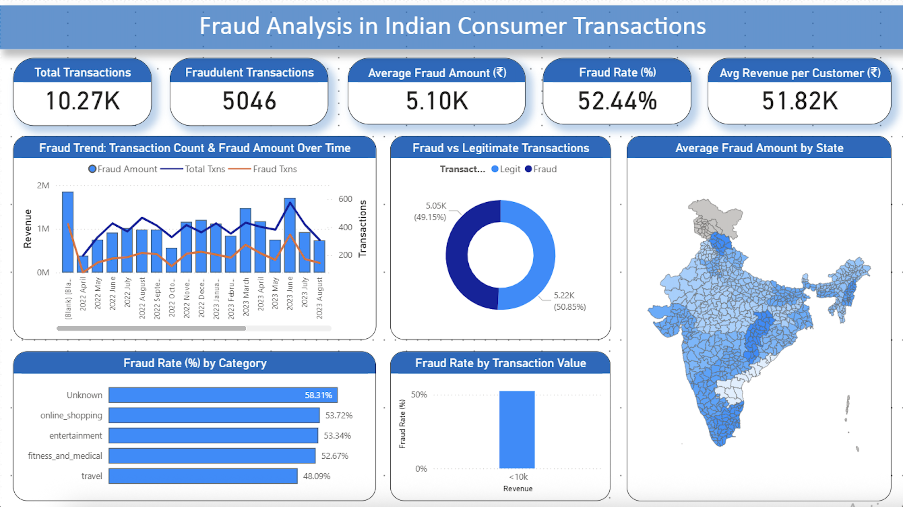

A Power BI dashboard analyzing 10K+ Indian consumer transactions to uncover patterns in fraud, spending behavior, and regional risk.

This dashboard focuses on identifying fraud patterns across 10,000+ consumer transactions in India. It combines data cleaning in Python with Power BI visualization to explore when, where, and how fraudulent activity occurs.
The Fraud Insights Dashboard presents a comprehensive view of fraudulent behavior across different dimensions—time, category, amount, and geography. It enables business and risk teams to quickly identify high-risk areas, quantify financial impact, and prioritize preventive measures.